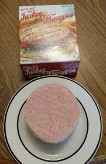

How to make my turkey burgers!
Here are the ingredients you will need:
- trader joes turkey burger patties
- any bun/bread
- red onion
- tomato
- avocado
- ketchup/mayo
Cooking it is quite simple as well, here are the steps:
- heat a pan with olive oil on medium high heat
- while pan heats, chops onion and tomato
- put turkey burger patties on pan, cook oneside for 6-8 minutes
- season with preferred seasonings
- flip, cook for another 6-8 minutes
- toast bread and prepare a bed for the burgers in the bread
This recipe is dairy free